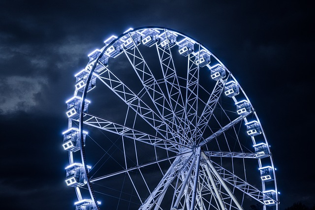

Rueda de la fortuna

La rueda de la fortuna es una estructura que tiene numerosas cabinas para pasajeros y da una vuelta de 360°. Se trata de una rueda gigantesca que gira verticalmente sobre un eje central permitiendo que las personas suban y bajen alrededor de éste.